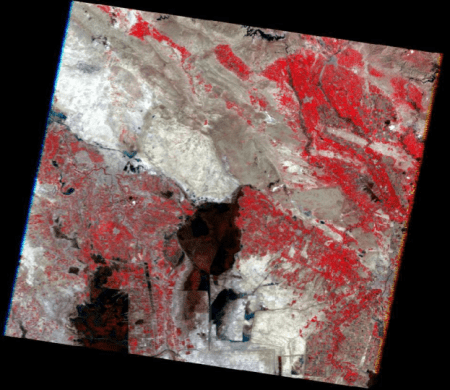
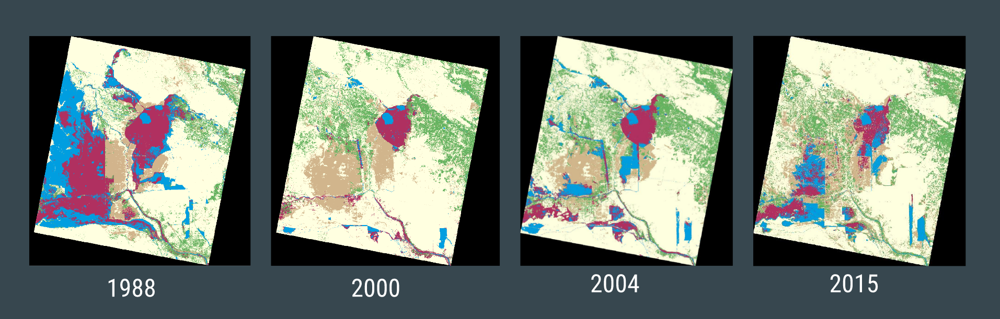
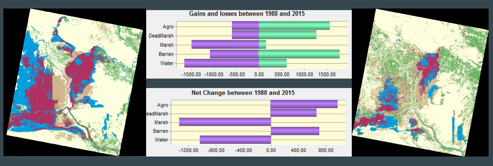

For millennia, the marshes in Mesopotamia — located by Iraq and Iran — boasted a rich culture of Marsh Arabs and a diverse ecosystem. Enter Saddam Hussein: after the building of dams and the targeting of marshes for political reasons, the ecosystem went under a drastic change. This project helps visualize the changes from 1988 to 2015 using Landsat 7 images and the remote sensing software ERDAS Imagine.
Images were acquired via USGS’s Global Visualization Viewer (GloVis). These images mostly derived from NASA’s Landsat 7 satellite, though for the earlier year of 1988, the Landsat 5 satellite was used. My partner in this project, Kristen Childs, and I aimed to analyze images from the area’s wet season (February to March) in order to minimize potential errors in analysis. The seven bands in each of the raw images were then stacked together so the images could undergo supervised classification.
To understand what type of land changed into another, we took five Areas of Interest (AOIs): Marsh, Agriculture/Light Vegetation, Water, Dead Marsh, and Barren Land. Each of these AOIs were captured using 30 samples from the original images for a total of 150 samples. From there we performed a supervised classification in which ERDAS color-codes the image based on our five classes of AOIs. The end result is a clearer picture of the area’s land use.
The AOIs had the following color-codes:
• Marsh: Maroon
• Dead Marsh: Tan
• Barren Land: Light Yellow
• Water: Blue
• Green: Agriculture/Light Vegetation
In order to get statistics on what percentage of land types changed to other land types, we used the software TerrSet.
As one can see, the impacts of humans were already apparent in 1988, albeit small. The year 2000 shows the ugly reality of Saddam Hussein’s infrastructure projects. Though marshes have reclaimed more ground as of 2015, it is not close to what it once was.
The full poster can be downloaded here.